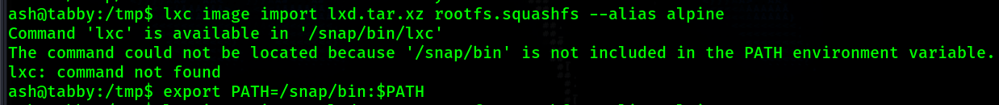

Return to Main Page
Tabby Walkthrough
Contents
Tabby begins with finding an LFI in order to gain access to tomcat and upload and deploy a .war reverse shell. After doing so there is password protected zip file on the web server. I crack the password has for this file and find out the password to the file is also the password to the file owner's account, ash. After switching users to ash I find that I am a part of the group "lxd". With lxd group permissions I am able to create an image and gain root access.
Running a port scan against the full port range to determine which ones are open.
# Nmap 7.91 scan initiated Fri Oct 22 15:02:55 2021 as: nmap -p- -oN ping_tcp 10.129.241.149
Nmap scan report for 10.129.241.149
Host is up (0.043s latency).
Not shown: 65532 closed ports
PORT STATE SERVICE
22/tcp open ssh
80/tcp open http
8080/tcp open http-proxy
# Nmap done at Fri Oct 22 15:03:20 2021 -- 1 IP address (1 host up) scanned in 25.32 seconds
Running an nmap scan using the flags -sV and -sC to enumerate service versions and other information.
# Nmap 7.91 scan initiated Fri Oct 22 15:03:52 2021 as: nmap -p22,80,8080 -sV -sC -oN script_tcp 10.129.241.149
Nmap scan report for 10.129.241.149
Host is up (0.038s latency).
PORT STATE SERVICE VERSION
22/tcp open ssh OpenSSH 8.2p1 Ubuntu 4 (Ubuntu Linux; protocol 2.0)
| ssh-hostkey:
| 3072 45:3c:34:14:35:56:23:95:d6:83:4e:26:de:c6:5b:d9 (RSA)
| 256 89:79:3a:9c:88:b0:5c:ce:4b:79:b1:02:23:4b:44:a6 (ECDSA)
|_ 256 1e:e7:b9:55:dd:25:8f:72:56:e8:8e:65:d5:19:b0:8d (ED25519)
80/tcp open http Apache httpd 2.4.41 ((Ubuntu))
|_http-server-header: Apache/2.4.41 (Ubuntu)
|_http-title: Mega Hosting
8080/tcp open http Apache Tomcat
|_http-title: Apache Tomcat
Service Info: OS: Linux; CPE: cpe:/o:linux:linux_kernel
Service detection performed. Please report any incorrect results at https://nmap.org/submit/ .
# Nmap done at Fri Oct 22 15:04:07 2021 -- 1 IP address (1 host up) scanned in 15.02 seconds
I begin by visiting tomcat on port 8080. I know if I can get access to the manager port of tomcat (/manager/html) then I can upload a .war reverse shell and gain access that way.
I test a few easy credentials like admin:admin but nothing works. Next, I try brute forcing using a list of common tomcat credentials using Hydra.
Hydra does not find anything. At this point I cannot move forward with tomcat so I move my attention to the web server on port 80.
I click around on the website and I find that when I scroll over "NEWS" it shows it links to megahosting.htb/news.php?file=statement. This looks like an LFI vulnerability.
In order to visit this page I will add megathosting.htb to my /etc/hosts file first.
Now I can visit megahosting.htb/news.php?file=statement. In order to test if this is an LFI vulernability I intercept a web request with Burp and start trying access /etc/passwd. I continue adding ../ before /etc/passwd until I get the file contents.
Now that I have confirmed the LFI vulnerability exists, I search for tomcat-users.xml. This file will contain the user credentials that have access to the tomcat manager portal at /manager/html on port 8080. In order to find this file, I look online to search for the file structure of this tomcat server. Based on the nmap output I know that this web server is running apache 2.4.41 and it is Ubuntu. So, I go to google and search apache 2.4.41 to see which distibution of Ubuntu has this version of apache.
According to the top result on google from packages.ubuntu.com, we are dealing with the distribution "focal". Now, I search "focal tomcat".
Now, clicking on "Details of package tomcat9 in focal" brings me to a page which lists the different tomcat packages on this distribution of Ubuntu.
- https://packages.ubuntu.com/focal/tomcat9
Clicking on "list of files" brings me to https://packages.ubuntu.com/focal/all/tomcat9/filelist which lists different tomcat file locations. In this list I find the location of tomcat-users.xml
I use this file location to find the tomcat-users.xml file using the LFI on port 80.
In this file I find the credentials tomcat:$3cureP4s5w0rd123!
We also learn something else in this file. The roles for the user "tomcat" define what permissions this user has. According to the main tomcat page on port 80 the role "manager-gui" is required for permissions to the "manager webapp" which is required in order to upload and reploy a .war reverse shell file. This user does not have this role. However, we do have the roles "admin-gui" which gives permission to the "host-manager webapp" and "manager-script" which gives permissions to "/manager/text". Permission requirements for the host-manager webapp and manager webapp are both described on the main page of tomcat.
Since I do not have access to the manager webapp I cannot upload and deploy a .war reverse shell file. I was able to find others who have been able to achieve a reverse shell through the host-manager webapp (not on hack the box machines). I was not able to recreate any of those methods. Instead, I turn to the manager-script role permissions.
Googling "manager-script" will bring up the page https://tomcat.apache.org/tomcat-8.5-doc/manager-howto.html. On this page I search for /manager/text and find some commands we can use. One of these commands is used to deply a new application WAR file.
Executing curl http://10.129.241.149:8080/manager/text/deploy?path=/foo causes the web server to respond with a message signifying that we need to authenticate. So I add the -u flag
So I add the credentials to the curl command: curl -u 'tomcat:$3cureP4s5w0rd123!' http://10.129.241.149:8080/manager/text/deploy?path=/foo. Now, the curl command includes authentication and the web server reponds with: FAIL - Invalid parameters supplied for command [/deploy]
In order to deploy a file we need to upload a file to deploy. So we will now create a reverse shell .war file using msfvenom. I also change the path to /shell instead of /foo.
Now I upload this file along with the deploy command.
With the .war reverse shell deployed I know start my netcat listener in preparation of receiving a reverse shell connection.
Once on the box I find a file called 16162020_backup.zip in the web server (/var/www/html/16162020_backup.zip). This file is password protected and the password $3cureP4s5w0rd123! does not work. I transfer this to my kali box in order to crack it by base64 encoding it and then decoding on my kali machine. I base64 encoded the file using the command cat 16162020_backup.zip | base64
Now I convert the zip file to a hash for john to crack and crack it.
I find the password admin@it. After cracking the has, I unzip the backup file but nothing useful seems to be in it. Instead, I decide to use the credential to attempt to su into the user ash, since ash was the owner of the original backup file. su ash and entering the password admin@it works and I now have a shell as ash.
As the user ash I run the command id and find that I am part of the group lxd.
Googling for "lxd privilege escalation" brings me to this page https://book.hacktricks.xyz/linux-unix/privilege-escalation/interesting-groups-linux-pe/lxd-privilege-escalation where it explains how to escalate privilege to root using the lxd group privileges. After following the instructions I end up with 2 files: lxd.tar.xz and rootfs.squashfs. I transfer them to the victim machine.

I try to run the command to add the image. However, it turns out my PATH variable does not include /snap/bin where lxc is located. So I update my path variable to include this location.

After running that command again it gives me a message suggesting I run lxd init. So I run that command. For every prompt I just press enter and use the default answers.
Currently I have been operating out of the /tmp directory. Every time I run the command I keep getting a message saying "Error: open ./lxd.tar.xz: no such file or directory". So I am assuming there is some type of restriction on the /tmp directory. Another common writable location is /dev/shm so I move my file there and rerun the command lxc image import lxd.tar.xz rootfs.squashfs --alias alpine as well as the 2 commands after it.
Now that I have finished setting up the container I start it up.
We now have a root shell.